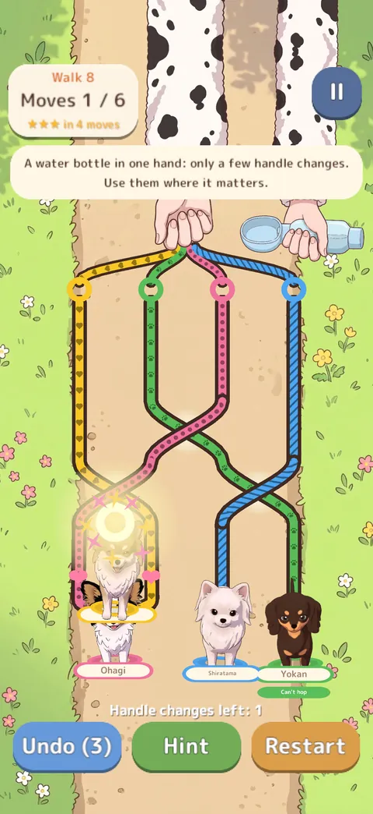
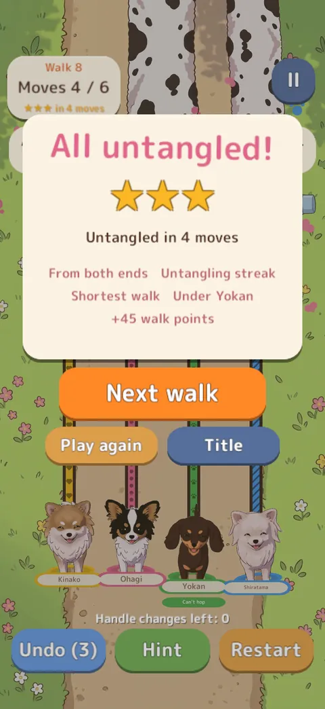
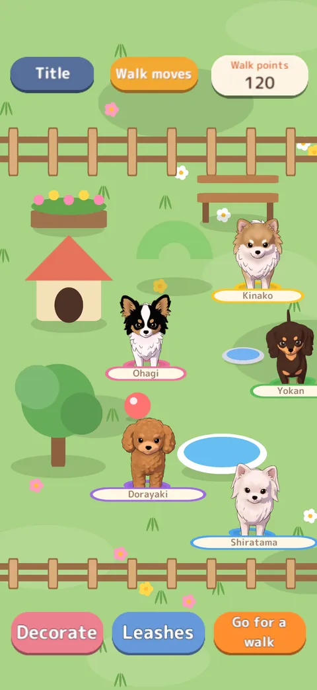
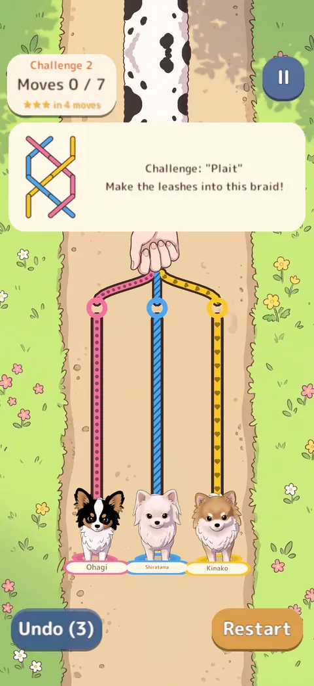
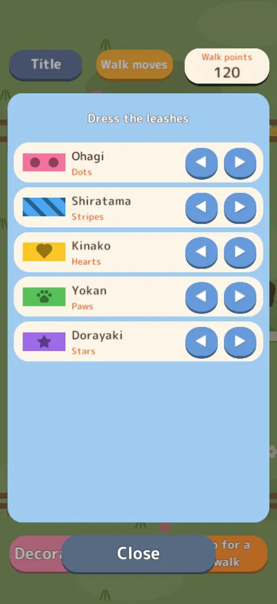
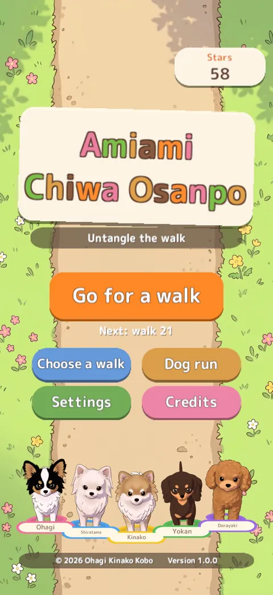

Home › Amiami Chiwa Osanpo
Amiami Chiwa Osanpo
Untangle the dogs' leashes
A Sunday morning walk. The dogs kept swapping places, and now their leashes are braided like a plait.
Swap neighbouring dogs, or swap the handles in the owner's hand, to make every leash straight again.
- PriceFree (with ads)
- DevicesiPhone & iPad (portrait) / PC browser
- LanguagesEnglish, Japanese
- Age4+

Features
- 1
300 walks
Street lamps, a water bottle, a dog that sits, Yokan who crawls under and Dorayaki who hops two at a time — new twists keep coming.
- 2
22 walk moves
Named move sequences to discover, collected in the dog run's book.
- 3
Reverse challenges
6 puzzles the other way round, like making a plait.
- 4
A growing dog run
The dogs you untangle come to play. Place decorations and put patterns on the leashes with walk points.
- 5
Never an ad during play
Ads only appear now and then between walks (from walk 10), limited to content suitable for all ages.
- 6
Happy dogs, always
The leashes are tied to harnesses, not collars. Tangled or not, the dogs are always happy.
Screenshots






← scroll sideways →
How to play
- Swipe a dog sideways: it hops over its neighbour and they swap places. The leash of the dog that hops goes over.
- Swipe a handle at the top to swap it in the owner's hand. The leash of the handle you move goes over.
- When the same dog hops back, the twist comes loose; if the other dog hops, it gets tighter. Watch which leash is on top.
- When no leashes cross, the walk is cleared. Fewer moves earn more stars. Stuck? Tap "Hint".
The dogs
Tell them apart by the colour of their leashes.

Ohagi
Chihuahua × Papillon
The studio's model dog: black head with a white stripe, big feathered ears and a curly white tail.

Shiratama
Chihuahua × Maltese
All white and fluffy.

Kinako
Chihuahua × Pomeranian
White and cream, with soybean-flour-coloured fur.

Yokan
Chihuahua × Dachshund
Long and never hops: he crawls under.

Dorayaki
Chihuahua × Toy Poodle
Can hop over two dogs at once.
FAQ
Can I play to the end for free?
Yes, the whole game is free. An ad may appear between walks (from walk 10, now and then), never during play.
What are the in-app purchases?
"Remove ads" and "Pattern pack" (4 leash patterns). Each is bought once and kept. No random rewards.
On a child's device you can restrict purchases with Screen Time.
What do I get for watching an ad?
It's always your choice: for example 3 more moves or double walk points.
Can I play on a PC?
Yes. The browser version on unityroom is free with no ads (up to walk 100, played with a mouse). For all 300 walks and the dog run, play on iPhone or iPad.
Where is my progress saved?
Only on your device. No account needed. Deleting the app deletes it.
Do you use AI?
The dogs' 3D models (turned into 2D pictures) were made with Meshy, and the owner's hands, street lamps, path and the dogs' faces with Google Gemini, then picked and adjusted by the developer. The code and text were written with Claude Code and reviewed by the developer. No AI content is generated while you play. The music is human-made.
Privacy in short
- The developer collects no personal information, and there are no accounts.
- The ad service, Google AdMob, may use an advertising identifier, approximate location and ad interactions. Personalised ads depend on your iPhone's tracking permission (everything is playable either way).
- Purchases go through the App Store; the developer never sees payment details. No analytics.
More games
-

Chiwa-Chiku RUN
Collect chikuwa, dodge obstacles and dash to the goal in this cosy 3D dog runner.
Free · no ads · no purchasesiPhone & iPad / PC -

Kuttsuki Chiwa Dango
Little dogs hop onto a dozing owner's lap and snuggle up in this cosy drop puzzle.
Paid once · no ads (free in browser)iPhone & iPad / PC browser -

Chiwa, Stay!
The dogs are told to stay, but they creep forward. At "OK!", whose nose was ahead?
Free (ads; Remove Ads available)iPhone & iPad -

Chiwa Hanko Kacho
Chief Ohagi, a chihuahua, stamps documents with a seal on the tip of his tail. Chief Neko checks every one.
Free · no adsPC browser (unityroom)